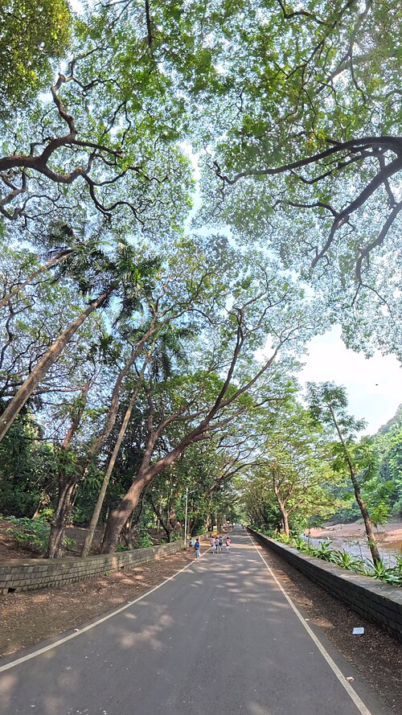

Crown Shyness
From Wikipedia, the free encyclopedia
For the album by Trash Boat, see Crown Shyness (album).
Crown shyness (also canopy disengagement,
[1] canopy shyness,
[2] or inter-crown spacing[3]) is a phenomenon observed in some tree
species,
in which the crowns of fully stocked trees do not touch each other,
forming a canopy with channel-like gaps.
[4][5]
The phenomenon is most prevalent among trees of the same species,
but also occurs between trees of different species.
[6][7] There exist many hypotheses as to why crown
shyness is an adaptive behavior,
and research suggests that it might inhibit
spread of leaf-eating insect larvae.[8]

Possible physiological explanations
The exact physiological basis of crown shyness is uncertain.
[6] The phenomenon has been discussed in scientific
literature since the 1920s.
[9] The variety of hypotheses and experimental results might suggest
that there are multiple mechanisms across different species,
an example of convergent evolution.[citation needed]
.jpg)
Some hypotheses contend that the interdigitation of canopy branches
leads to "reciprocal pruning" of adjacent trees:
trees in windy areas suffer physical damage as they collide
with each other during winds;
the abrasions and collisions induce a crown shyness response.
Studies suggest that lateral branch growth is largely
uninfluenced by neighbours until disturbed by mechanical abrasion.
[10] If the crowns are artificially prevented from colliding in the
winds,
they gradually fill the canopy gaps.
[11] This explains instances of crown shyness
between branches of the same organism.
Proponents of this idea cite that shyness is particularly seen in
conditions conducive to this pruning, including windy forests,
stands of flexible trees,
and early succession forests where branches are flexible and
limited in lateral
movement.
[6][12] According to this theory,
variable flexibility in lateral branches
greatly influences the degree of crown shyness.

Similarly,
some research suggests that constant abrasion at growth nodules
disrupts bud tissue such that it is unable to continue with lateral
growth.
Australian forester M.R. Jacobs,
who studied the crown shyness patterns in eucalyptus in 1955,
believed that the trees' growing tips were sensitive to abrasion,
resulting in canopy gaps.
[13] Miguel Franco (1986) observed that the branches of
Picea sitchensis (Sitka spruce) and Larix kaempferi
(Japanese larch) suffered physical damage due to abrasion,
which killed the leading shoots.
[10][14]
A prominent hypothesis is that canopy shyness has to do with mutual
light sensing by adjacent plants.
The photoreceptor-mediated shade avoidance response is a
well-documented behavior in a variety of plant species.
[15] Neighbor detection is thought to be a function of
several unique photoreceptors.
Plants can sense the proximity of neighbors by sensing backscattered
far-red light,
a task widely thought to be accomplished
by the activity of the phytochrome photoreceptors.
[16] Many species of plant respond to an increase in far-red light
(and, by extension, encroaching neighbors)
by directing growth away from the far-red stimulus and by increasing
the rate of elongation.
[17] Similarly,
plants use blue light to induce the shade-avoidance response,
likely playing a role in the recognition of neighboring plants,[18]
though this was just starting to be recognised in 1988.[19]
The characterization of these behaviors might suggest that crown
shyness is simply the result of
mutual shading based on well-understood
shade avoidance responses.
[6][20] Malaysian scholar Francis S.P. Ng,
who studied Dryobalanops aromatica,
suggested that the growing tips were sensitive to light levels and
stopped growing when nearing
the adjacent foliage due to the induced shade.[6][20]
A 2015 study has suggested that Arabidopsis
thaliana shows different leaf placement strategies when grown
amongst kin and unrelated conspecifics,
shading dissimilar neighbors and avoiding kin.
This response was shown to be contingent on the proper functioning
of multiple photosensory modalities.
[21] A 1998 study proposed similar systems of photoreceptor-mediated
inhibition of growth as explanations of crown shyness,
[6][20] though a causal link between photoreceptors and crown
asymmetry had yet to be experimentally proven.
This might explain instances of intercrown spacing that are only
exhibited between conspecifics.[6][7]
Species
Trees that display crown shyness patterns include:
-
Species of Dryobalanops,
including Dryobalanops lanceolata[22]
and Dryobalanops aromatica (kapur)
- Some species of eucalypt[23]
- Pinus contorta or lodgepole pine[1]
- Avicennia germinans or black mangrove[3]
- Schefflera pittieri[6][12]
- Clusia alata[6][12]
-
K.
Paijmans observed crown shyness in a multi-species group of
trees,
comprising Celtis spinosa and Pterocymbium beccarii[7]
References
-
Goudie, James W.; Polsson, Kenneth R.; Ott, Peter K. (2008).
"An empirical model of crown shyness for lodgepole pine
(Pinus contorta var.
latifolia [Engl.] Critch.) in British Columbia".
Forest Ecology and Management. 257 (1): 321–331.
doi:10.1016/j.foreco.2008.09.005.
ISBN 9781437926163
-
Peter Thomas; John Packham (26 July 2007).
Ecology of Woodlands and Forests: Description,
Dynamics and Diversity. Cambridge University Press.
p. 12.
ISBN 978-0-521-83452-0.
-
Putz, Francis E.; Parker, Geoffrey G.;
Archibald, Ruth M. (1984).
"Mechanical Abrasion and Intercrown Spacing" (PDF).
American Midland Naturalist. 112 (1): 24–28.
doi:10.2307/2425452.
JSTOR 2425452.
-
Norsiha A. and Shamsudin (2015-04-25).
"Shorea resinosa : Another jigsaw puzzle in the sky".
Forest Research Institute Malaysia.
-
Fish, H; Lieffers, VJ; Silins, U; Hall, RJ (2006).
"Crown shyness in lodgepole pine stands of varying stand height,
density and site index in the upper foothills of Alberta".
Canadian Journal of Forest Research. 36 (9): 2104–2111.
Bibcode:2006CaJFR..36.2104F.
doi:10.1139/x06-107.
-
Rebertus,
Alan J (1988).
"Crown shyness in a tropical cloud forest"
(PDF).
Biotropica (FTP).
pp. 338–339. Bibcode:1988Biotr..20..338R. doi:10.2307/2388326.
ISSN 0006-3606. JSTOR 2388326.
[dead ftp link] (To view documents see Help:FTP)
-
K. Paijmans (1973). "Plant Succession on Pago and Witori
Volcanoes,
New Britain" (PDF).
Pacific Science.
27 (3).
University of Hawaii Press: 60–268.
ISSN 0030-8870.
- "Tropical Rain Forest". Woodland Park Zoo. p. 37.
-
"TASS III: Simulating the management, growth and yield of
complex stands" (PDF).
-
Franco,
M (14 August 1986).
"The influences of neighbours on the growth of
modular organisms with an example from trees".
Philosophical Transactions of the Royal Society of London.
B, Biological Sciences.
313 (1159):
313, 209–225.
Bibcode:1986RSPTB.313..209F. doi:10.1098/rstb.1986.0034.
-
Victor Lieffers.
"Crown shyness in maturing boreal forest stands".
SFM Network Research Note Series.
36.
ISSN 1715-0981.
Archived from the original on 2015-09-25.
Retrieved 2015-08-23.
-
Lawton,
RO;
Putz,
Francis E.
"The vegetation of the Monteverde Cloud Forest Reserve".
Brenesia.
18:
101–116.
-
Maxwell Ralph Jacobs (1955).
Growth Habits of the Eucalypts.
Forestry and Timber Bureau.
-
Wilson, J. Bastow;
Agnew, Andrew D.Q.;
Roxburgh, Stephen H. (2019).
"2: Interactions between Species".
The Nature of Plant Communities. Cambridge:
Cambridge University Press.
pp.
24–65.
doi:10.1017/9781108612265.004.
ISBN 9781108612265.
-
Ballaré,
CL;
Scopel,
AL; Sánchez,
RA (19 January 1990).
"Far-red radiation reflected from adjacent leaves:
an early signal of competition in plant canopies".
Science. 247 (4940): 329–32.
Bibcode:1990Sci...247..329B.
doi:10.1126/science.247.4940.329.
PMID 17735851. S2CID 39622241.
-
Ballare, C. L.; Sanchez, R. A.; Scopel,
Ana L.; Casal, J. J.; Ghersa, C. M.
(September 1987). "Early detection of neighbour plants by
phytochrome perception of
spectral changes in reflected sunlight".
Plant, Cell and Environment. 10 (7): 551–557.
Bibcode:1987PCEnv..10..551B.
doi:10.1111/1365-3040.ep11604091.
-
Ballaré,
CL; Scopel,
AL; Sánchez,
RA (June 1997).
"Foraging for light:
photosensory ecology and agricultural implications".
Plant,
Cell and Environment.
20 (6): 820–825.
Bibcode:1997PCEnv..20..820B.
doi:10.1046/j.1365-3040.1997.d01-112.x.
-
Jansen,
Marcel AK;
Gaba, Victor;
Greenberg,
Bruce M (April 1998).
"Higher plants and UV-B radiation:
balancing damage, repair and acclimation".
Trends in Plant Science. 3 (4): 131–135.
Bibcode:1998TPS.....3..131J.
doi:10.1016/S1360-1385(98)01215-1.
-
F.S.P. Ng (1997).
"Shyness in trees".
Nature Malaysiana.
2: 34–37.
-
Christie,
JM; Reymond,
P;
Powell,
GK; Bernasconi,
P; Raibekas,
AA; Liscum,
E; Briggs, W
R (27 November 1998).
"Arabidopsis NPH1:
a flavoprotein with the properties of a
photoreceptor for phototropism".
Science.
282 (5394): 1698–701.
Bibcode:1998Sci...282.1698C.
doi:10.1126/science.282.5394.1698.
PMID 9831559.
-
Crepy,
María A.;
Casal,
Jorge J.
(January 2015).
"Photoreceptor-mediated kin recognition in plants".
New Phytologist.
205 (1):
329–338.
Bibcode:
2015NewPh.
205..
329C.
doi:10.1111/nph.13040.
hdl:11336/37860.
PMID 25264216.
S2CID 28093742.
-
Margaret Lowman; Soubadra Devy; T. Ganesh (22 June 2013).
Treetops at Risk: Challenges of Global Canopy Ecology and
Conservation. Springer Science & Business Media. p. 34.
ISBN 978-1-4614-7161-5.
-
R. G. Florence (January 2004).
Ecology and Silviculture of Eucalypt Forests.
Csiro Publishing. pp. 182–.
ISBN 978-0-643-09064-4.